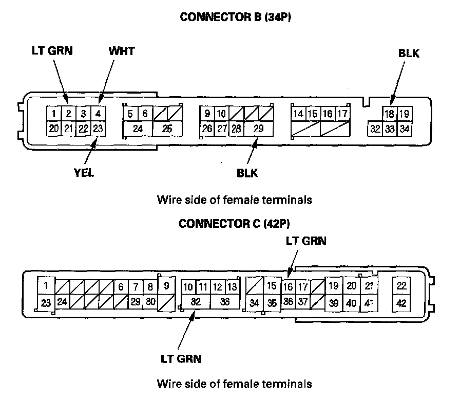
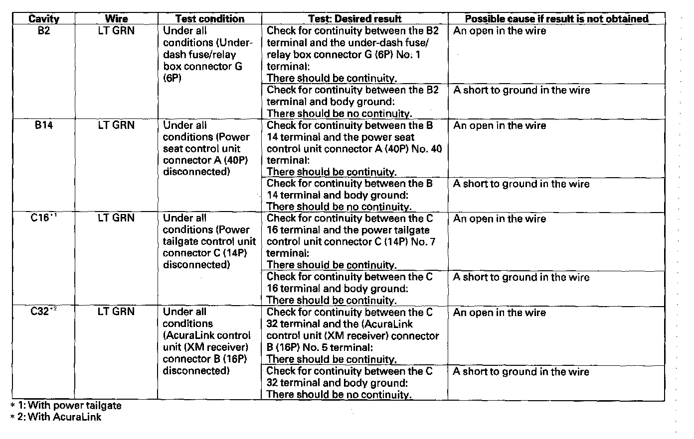
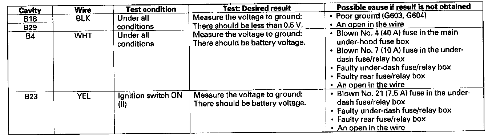

Rear MICU Input Test
Rear MICU Input TestNOTE: Before testing, troubleshoot the B-CAN System Diagnosis Test Mode A.
1. Turn the ignition switch OFF.
2. Remove the left rear trim.

3. Disconnect the rear fuse/relay box connectors B (34P) and C (42P).
4. Inspect the connector and socket terminals to be sure they are all making good contact.
- If the terminals are bent, loose or corroded, repair them as necessary and recheck the system.
- If the terminals look OK, go to step 5.

5. With the connectors still disconnected, make these input tests at the connectors.
- If any test indicates a problem, find and correct the cause, then recheck the system.
- If all the input tests prove OK, go to step 6.

6. Reconnect the connectors, and make these input tests at the connectors.
- If any test indicates a problem, find and correct the cause, then recheck the system.
- If all the input tests prove OK, the rear MICU must be faulty, replace the rear fuse/relay box.